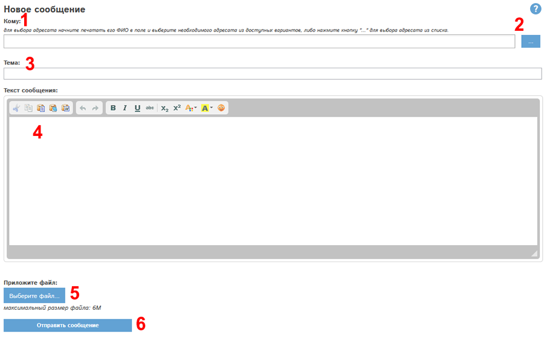
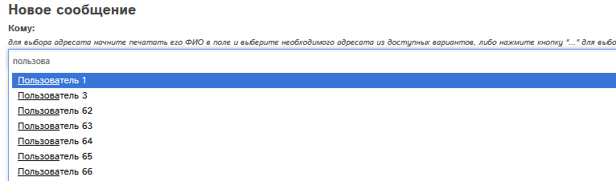
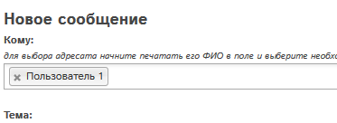
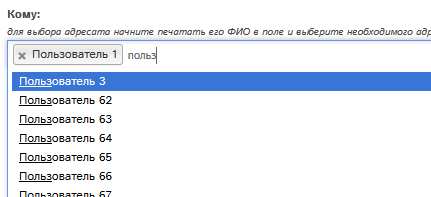
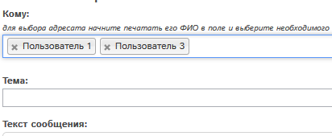
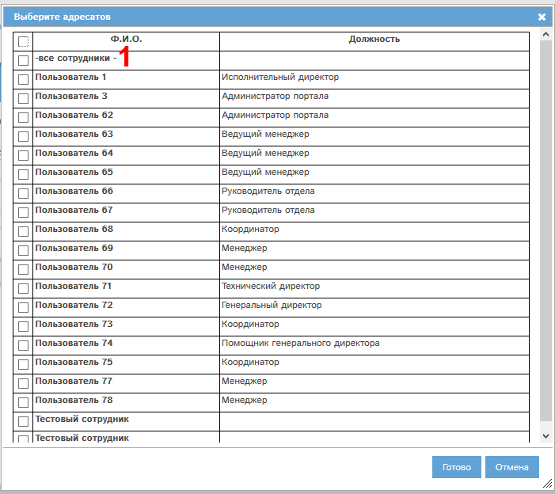
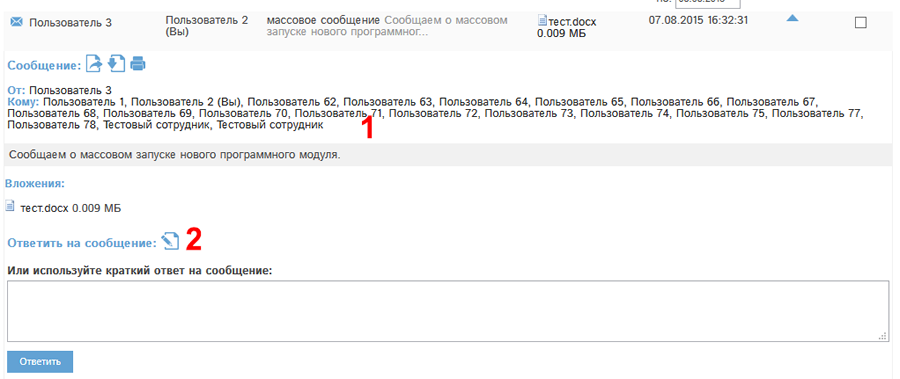
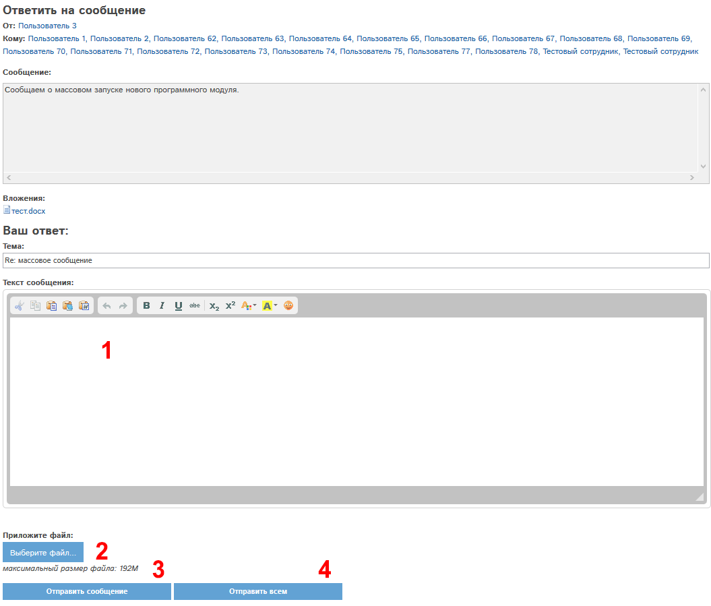

Откроется окно создания нового сообщения:
Для того, чтобы написать новое личное сообщение, Вам необходимо нажать кнопку («Написать сообщение…») в главном меню программы, либо в папке «Входящие сообщения» раздела «Сообщения» (кнопка  ).
).
Откроется окно создания нового сообщения:

Рис. 1. Окно нового сообщения.
В поле «Кому» (обозначено цифрой 1) необходимо указать сотрудника-адресата сообщения.
Это можно сделать двумя способами:
1. Начать набирать в поле (1) ФИО требуемого адресата. Если такой адресат есть в программе, то он будет доступен во всплывающем меню.

Необходимо кликнуть про требуемому адресату, он подставится в поле (1).

Чтобы добавить еще одного адресата, набирайте в поле (1) ФИО этого адресата, и аналогично выберите его из списка вариантов:


2. Адресата можно выбрать из списка сотрудников. Для этого нажмите кнопку "..." (2). Откроется список сотрудников:

Для выбора предназначен список сотрудников.
Сообщение можно отправить как одному сотруднику, так и нескольким сотрудникам. Также можно отправить сообщение всем сотрудникам.
Для того, чтобы отправить сообщение всем сотрудникам, отметьте галочкой пункт «-все сотрудники -» (1).
Для того, чтобы отправить сообщение нескольким сотрудникам, нужно отметить галочками нужных сотрудников в списке.
Для выбора единственного адресата необходимо отметить его галочкой в списке.
В конце выбора нужно нажать Готово, отмеченные сотрудники подставятся в форму создания сообщения.
Вернемся к форме создания сообщения:
В поле «Тема» (3) нужно указать тему сообщения.
В поле «Текст сообщения» (4) необходимо написать сообщение.
При помощи кнопки «Выберите файл…» (5) Вы можете приложить к сообщению произвольное количество файлов. Вы можете приложить несколько файлов, или удалить приложенные файлы, если Вы передумали.
С помощью кнопки «Отправить сообщение» (6) Вы отправляете сообщение выбранному адресату или адресатам.
В программе доступна возможность ответить на письмо одновременно всем участникам переписки. Это актуально, если сообщение было отправлено нескольким пользователям. Рассмотрим пример такого сообщения:

В поле Кому (1) у массового сообщения указано несколько получателей. Чтобы написать одновременно и отправителю, и остальным получателям, нажмите кнопку "Расширенный ответ" (2) . Откроется форма расширенного ответа:

Напишите текст сообщения в поле (1), при необходимости - прикрепите файлы в поле (2).
Для отправки сообщения всем участникам переписки нажмите кнопку "Отправить всем" (4).
Кнопка "Отправить сообщение" (3) отправляет сообщение только сотруднику-отправителю письма, на которое вы составляете ответ. Он указан в поле "От" этой формы.